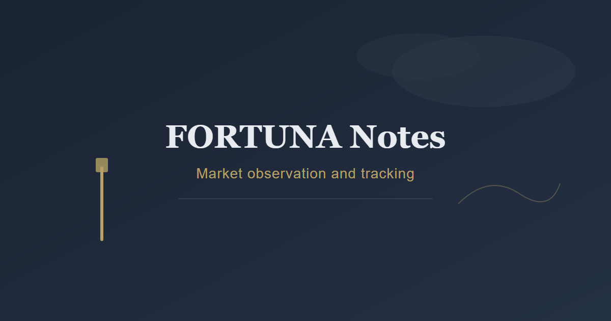
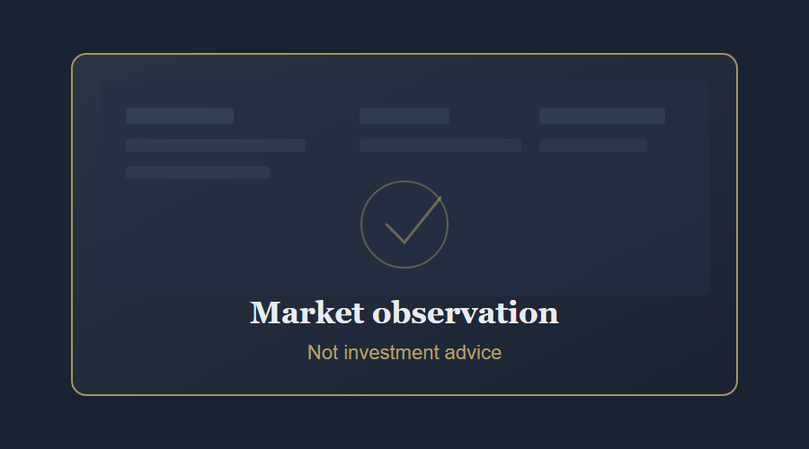
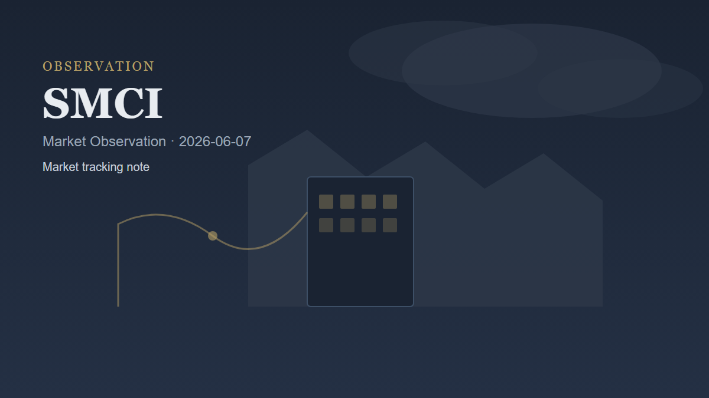
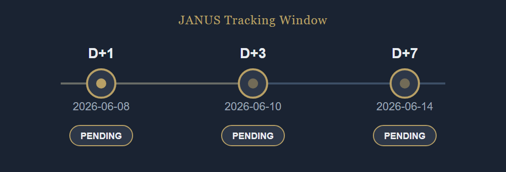

FORTUNA Visual Assets




Informational market-observation visuals only. Not investment advice. No guaranteed outcomes.




Informational market-observation visuals only. Not investment advice. No guaranteed outcomes.